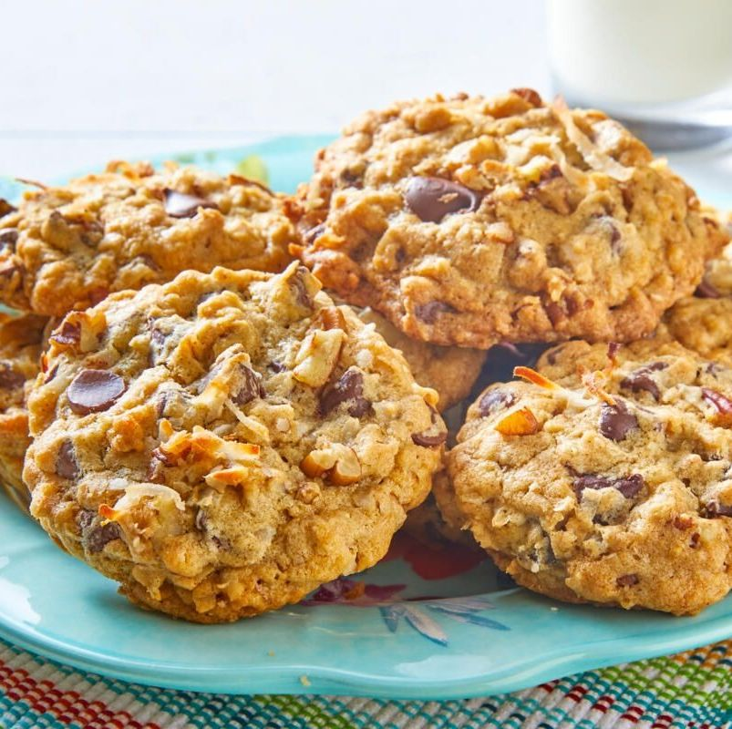

Cowboy Cookies

Ingredents
- 1 Cup Salted Butter
- 1 Cup Brown Sugar
- 1/2 Cup Granulated Sugar
- 2 Eggs
- 2 TSP Vanilla Extract
- 2 Cup All-Purpose Flour
- 1 TSP Baking Soda
- 1/2 TSP Ground Cinnamon
- 1 1/12 Cup Old-Fashioned Rolled Oats
- 1 Cup Chopped Pecans
- 1 Cup Coconut Flakes
- 2 Cup Chocolate Chips
Instructions
- In a medium saucepan, brown 1/2 cup of butter by melting it over medium heat, then letting it cook and bubble for an additional 3 to 5 minutes, or until the foam and butter underneath is golden brown. Immediately transfer it to a large, heatproof mixing bowl and swirl a few times to help stop the browning. Let it cool to room temperature, about 30 minutes. Meanwhile, allow the remaining 1/2 cup of butter to soften.
- Preheat the oven to 350˚F.
- To the browned butter, add the softened 1/2 cup of butter, brown sugar, and granulated sugar. Using a stand or hand mixer, beat on medium-high speed until the mixture has lightened in color and texture, 2 to 3 minutes. Reduce the mixer speed to low. Add the eggs and vanilla, and beat until smooth, scraping the sides and bottom of the bowl as needed.
- In another medium bowl, whisk to combine the flour, baking soda, and cinnamon. Add the flour mixture to the butter mixture in 3 parts, mixing on low speed until fully incorporated after each addition. Scrape the sides and bottom of the bowl as needed. Add the oats, pecans, coconut flakes, and chocolate chips, and mix on low speed or stir with a spatula to combine.
- Line two large baking sheets with parchment paper. Using a 2 tablespoon cookie scoop, drop cookie dough onto the baking sheet, leaving about 2 inches of space between each cookie. Bake for 12 to 14 minutes, or until golden brown and dry in appearance on top. Let the cookies cool for 2 minutes on the baking sheet, then transfer to a cooling rack to cool completely. Sprinkle with flaky salt.